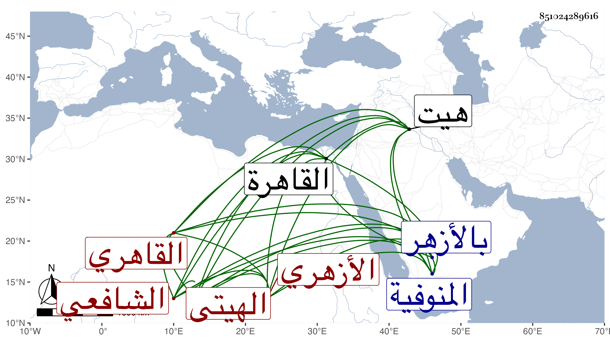

0902Sakhawi.DawLamic.ITO20230111-ara1.EIS1600.851024289616
Biography ID: 851024289616
16
أحمد بن علي بن إبراهيم بن مكنون الشهاب الهيتي ثم القاهري الأزهري الشافعي . ولد بهيت وهي من أعمال المنوفية وقدم القاهرة فحفظ القرآن وكتبا كالمنهاج الفرعي وجمع الجوامع وألفية ابن مالك وبلغني أنه كان يعد نفسه إذا ختم المنهاج أنه يطعمها من عرعر طباخ على باب الجامع ولازم الاشتغال عند أئمة العصر كالقاياتي والونائي والجمال بن المجبر وابن المجدي وشيخنا وكتب عنه من أماليه وسمع عليه وعلى الزين الزركشي وناصر الدين الفاقوسي وعائشة الكنانية وآخرين وبرع في الفقه وكثر استحضاره له بل وللكثير من شرح مسلم للنووي لإدمان نظره فيه وقرأ عليه الطلبة ودرس بجامع الفكاهين ولازمه الفخر عثمان الديمي وهو الذي كان يعينه على المطالعة في إكمال ابن ماكولا وشرح مسلم وكان لا يمل من المطالعة والاشتغال مع الخير والدين والتواضع والجد المحض والتقلل الزائد والاقتدار على مزيد السهر ولولا بطء الفهم لكان نادرة في وقته وقد سمعت بقراءته في الروضة على شيخنا الونائي وكثرت مجالستي معه وسمعت من فوائده وأبحاثه وكان جرش الصوت في مباحثته ومخاطباته لا يعرف الفضول ولا الخوض فيما لا يعنيه طوالا حسنا وضيئا في لسانه لثغة ، وعين في أواخر عمره لبعض التداريس فلم يتم أمره فيه ، ولم يلبث أن مات بالطاعون في يوم الأحد رابع عشر المحرم سنة ثلاث وخمسين وصلى عليه من يومه بالأزهر ودفن بجوار شيخه القاياتي وقد زاد على الأربعين بيسير رحمه الله وإيانا .
